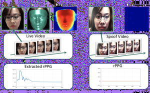

Emplex: Deviceless Neurotechnologies
Contactless Heart Rate Measurement
The photoplethysmography (PPG) which means heart-rate pulsation is generally measured on a finger or an ear using contact sensors. The recent several studies using web-cam to measure PPG have been introduced under the desktop or mobile computing environment including service robots.
It provides more comfortable measurement in or out of the clinic with the rapidly developing non-contact PPG measurement. People can watch their health values from smartphones. by integrating remote ppg technology without attaching any sensor. Now let’s get into a little detail of this wonderful technology without boring you.
If we begin with the working principle of standard ppg, we can explain it by figure (1) easily.

As you can see from the figure 1; The rays emitted from the light source are absorbed by the skin and the rays that are not absorbed are reflected back and captured by the detector.
A single 1-D signal is extracted from the spatially averaged values of these pixels over time. In parallel, 3-D head movements are tracked and used to suppress motion noise. An FFT based wide and narrow band filtering process produces a clean pulse waveform from which peaks are detected. The inter-beat intervals obtained from these peaks are then used to compute heart rate and heart rate variability. The full analysis can be performed in real time on a CPU.
The general approach
1.Skin pixel selection: First, it should be adapted to face. Blood intensity relative to time in the interest area of the face is the first and basic step to measure heart rate remotely. This region is called the Region of Interested Area (ROI).
2.Signal extraction: Each pixel color of the region (red, green, blue) average is measured over time.
3.Signal filtering: Noise from head movements to face model are detected by observing and then noiseless heart rate is produced.
4.Output calculations: Peak intervals are measured by detecting peaks, and then heart rate and heart rate variability are estimated.
Although the methods or algorithms used according to different studies vary, the steps generally applied are as mentioned. With the combination of appropriate programming languages (mostly MatLab and C) and algorithms, a suitable application is developed for non-contact heart rate measurement.